From driveways and foundations to ready mix, pumping, gravel, dirt work and hauling. We do just about anything, so give us a call.

Concrete construction
Our concrete construction crew offers professional commercial and residential work, from the excavation and dirt work to the final finish.
- Driveways
- Sidewalks
- Parking lots
- Foundations & footings
- Basements
- Retaining walls
- Pools
- Pads & patios
- Storm shelters
- Excavation & dirt work
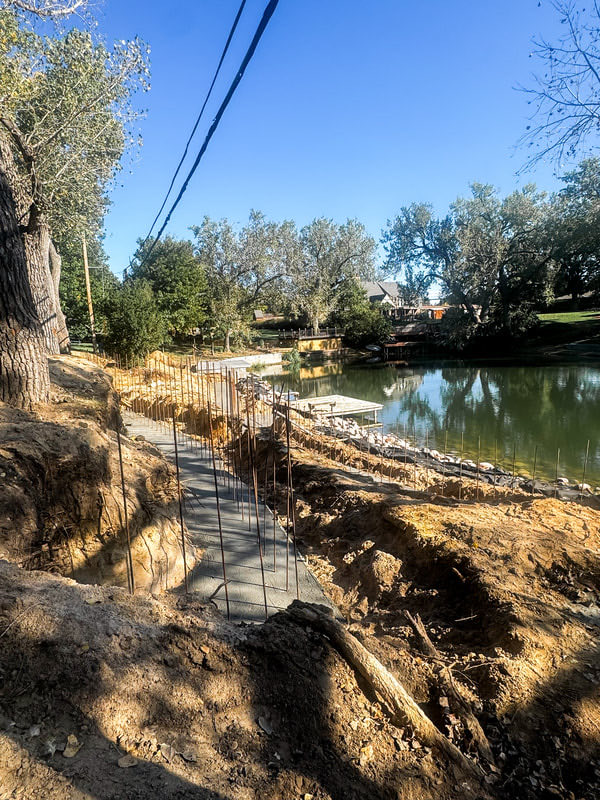
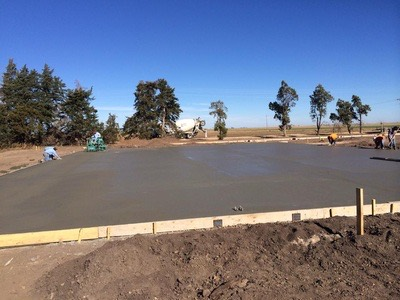

Free estimates: (620) 285-2097
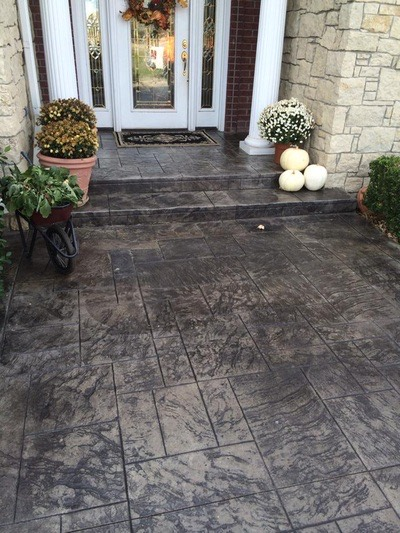
Decorative stamped concrete
Add polish and class to your patio or porch with decorative stamped concrete. Hundreds of design and color combinations are available to make yours one of a kind.
- Patios
- Porches & steps
- Concrete color
- Stain & sealer
Talk patterns and colors: (620) 285-2097
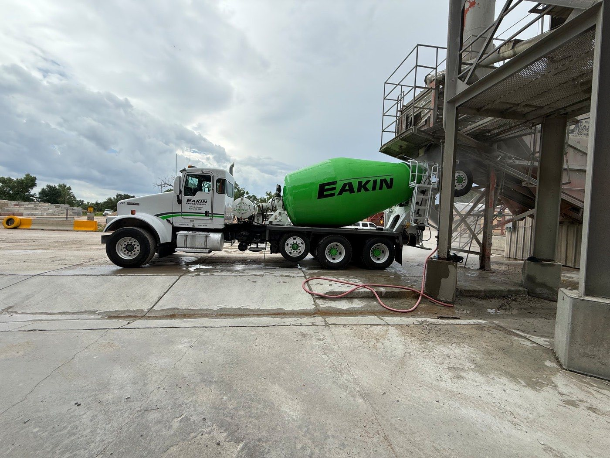
Ready mix, in the family since 1957
Concrete isn’t just what we do. It’s what our family has done since 1957. Our mixes are based on what actually holds up in the field: four generations of experience combined with today’s technology and better materials.
With barrel mixers, a volumetric truck and a volumetric trailer, we have multiple ways to deliver exactly what your project calls for. Old-school experience. Modern capability.
Order concrete: (620) 285-3726
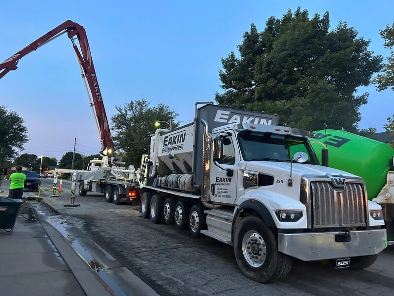
Mixed on site. Always fresh.
Two volumetric units, a truck and a trailer, work together or independently. Instead of batching at a plant, they mix your concrete on site, so you can change slump, strength or mix design on the fly.
- Driveways, sidewalks, patios
- Foundations and footings
- Municipal and DOT work
- Remote or hard-to-access sites
- Continuous mixing, no waiting on trucks
- Pay only for what you use
- No short-load fees
- Ideal for phased pours
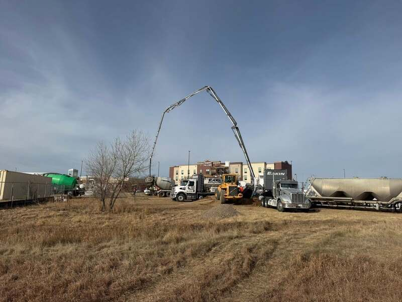

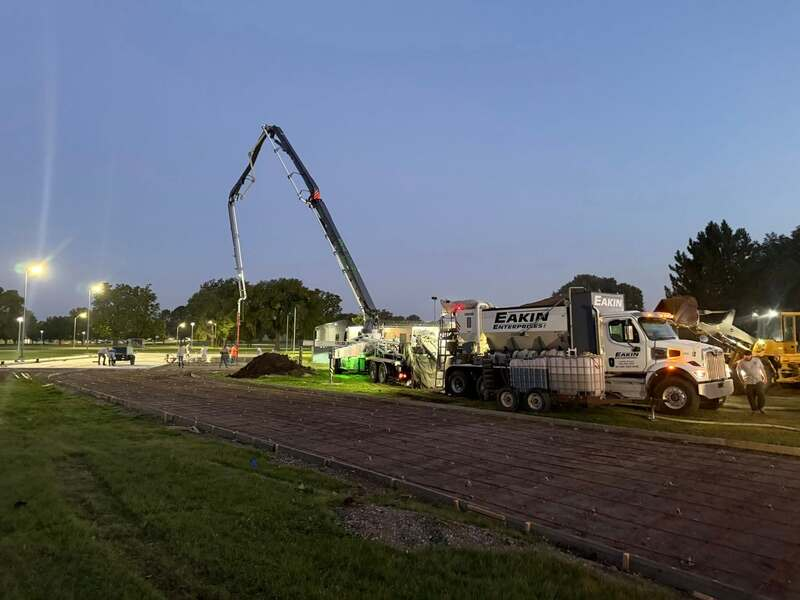
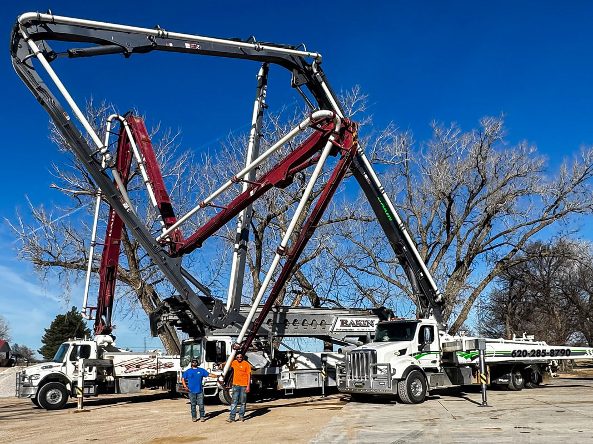
Two Alliance pumps & a Telebelt
Efficient, high-quality concrete and material placement for everything from tight-access pours to large-scale production work.
The Putzmeister Telebelt is a truck-mounted telescopic conveyor that places concrete, gravel, backfill, dirt, mulch, sand and rock in hard-to-reach spots, ideal for foundations, decks, mat pours, slabs and footings.
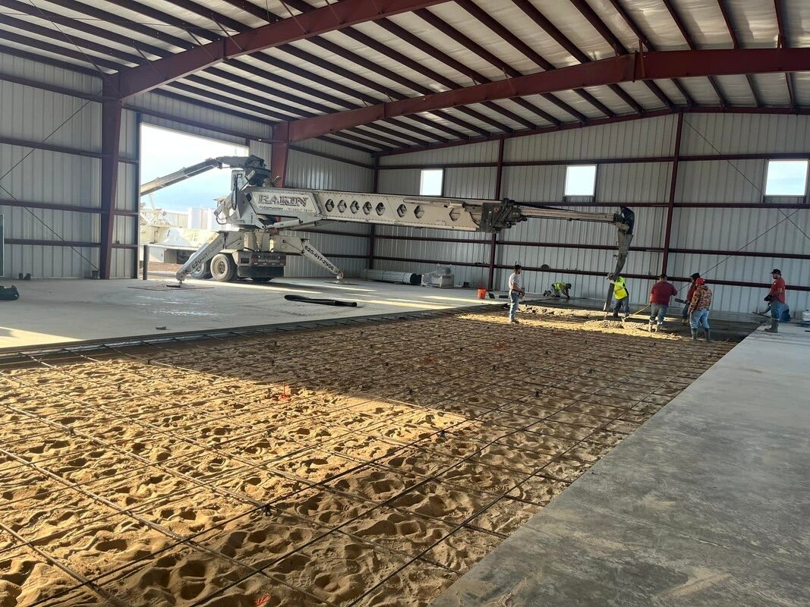
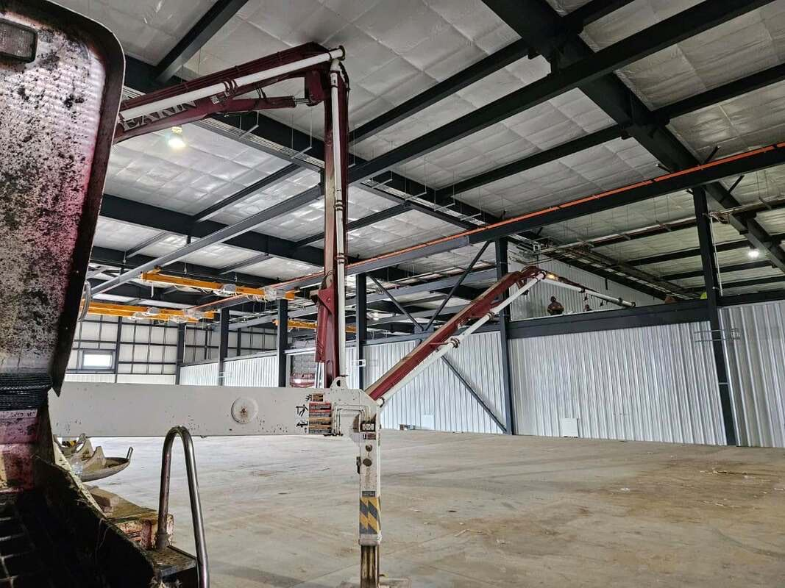
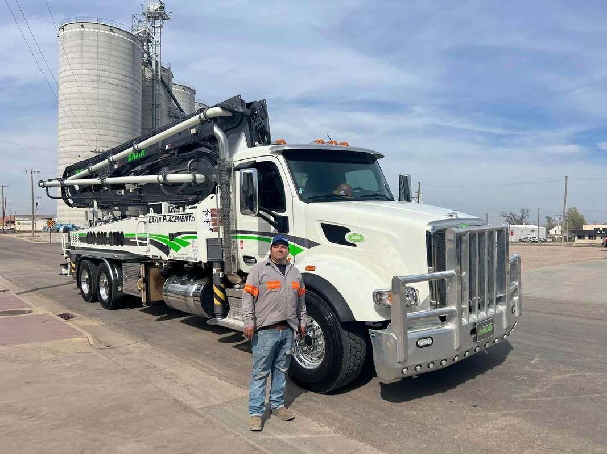
Call Adolfo: (620) 285-8790
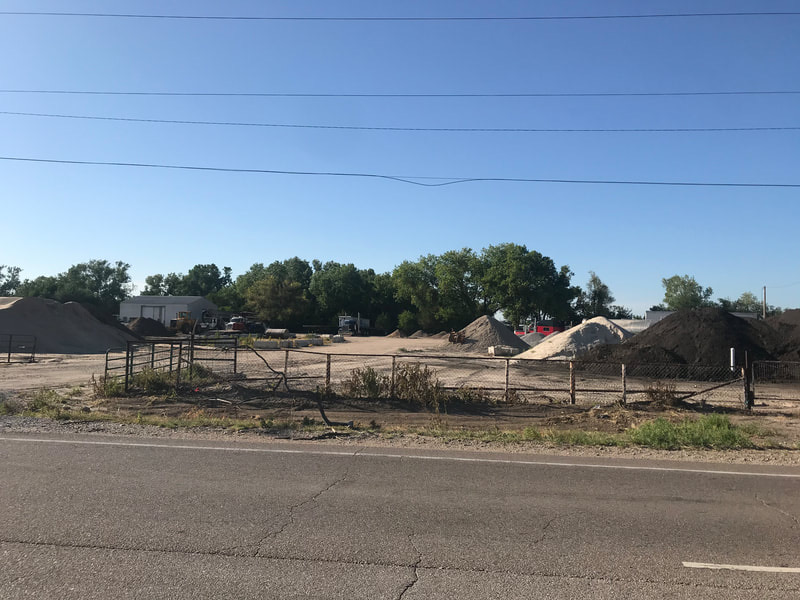
Sand, gravel & rock
The Eakin family has provided sand and gravel for over 70 years. We deliver by semi, tandem truck or even by the loader bucket, or you can pick up and we’ll load you on site. Materials are priced by the ton; delivery costs extra.
- Coarse rock
- Washed egg rock
- White rock
- Pea gravel
- Sand
- Asphalt millings
- Crushed concrete
- Custom & out-of-state orders
1252 US Hwy 56, Larned · (620) 285-3916
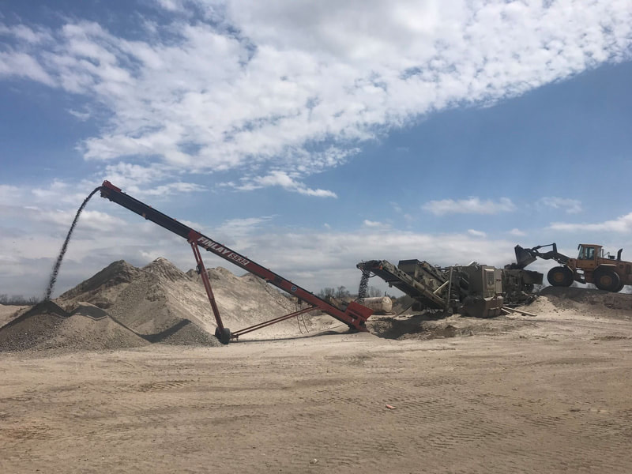
Demolition, crushing, culverts & dirt work
- Demolition: commercial or residential property per city code, tree removal and clean-up.
- Crushing: our own portable crusher. We sell the crushed concrete we make, a great base.
- Culverts: remove and replace culverts under roads and driveways, or install new ones, materials included.
- Dirt work: pads of any sort and leveling, with a GPS grader and excavator for big or small jobs.
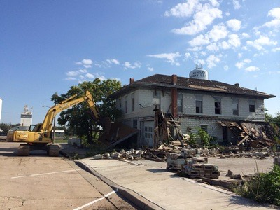
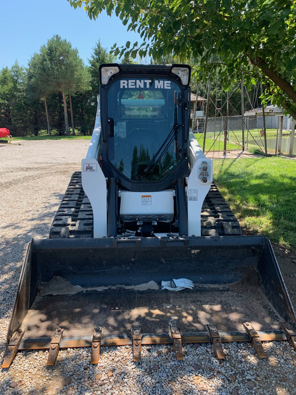
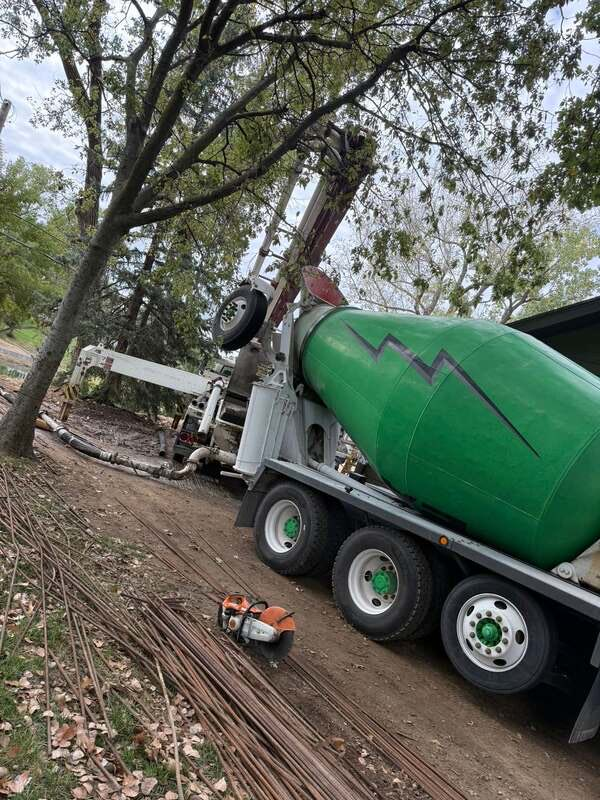
Equipment rental & construction supplies
- Bobcats & skid steers
- Excavators
- Loaders
- Trenchers
- Power trowels
- Electric jackhammers
- Concrete saws
- Air compressor
- Hammer drills
- Plate compactors
Concrete supplies on the shelf: bits, anchor bolts, screws, caulking, concrete sealer, blades, wire mesh, rebar, form ties, wire ties, vapor barrier, sonotube, joint sealants, concrete color, stain and more.
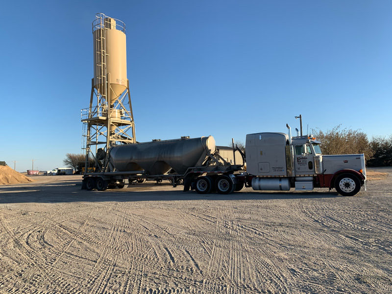
Hauling & storage containers
We haul loaders, excavators, tractors, semis, carports and storage containers with our own lowboy and flatbed trailers, plus bulk cement, fly ash, grain and aggregates with end dumps, dump trucks and a belly dump.
We also sell and lease storage containers: 20’, 40’ and 45’, new and used cargo-worthy (wind and watertight), standard, high cube and double door. And in winter, Eakin Snow and Ice Management.
Call the office: (620) 285-2097